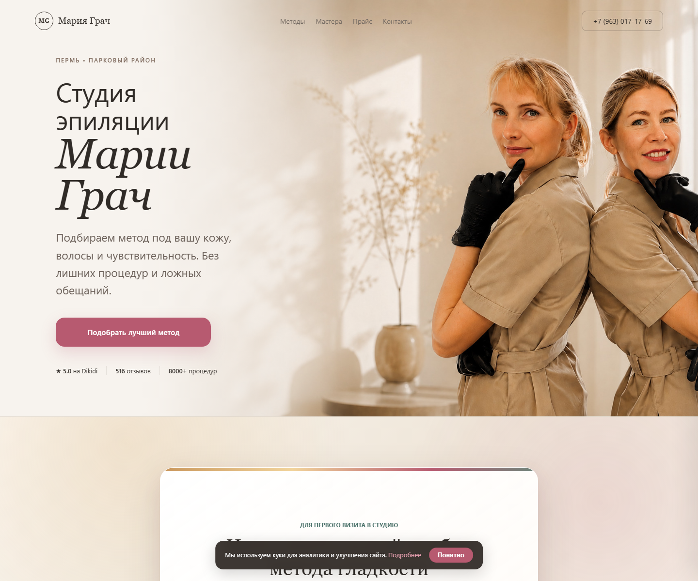
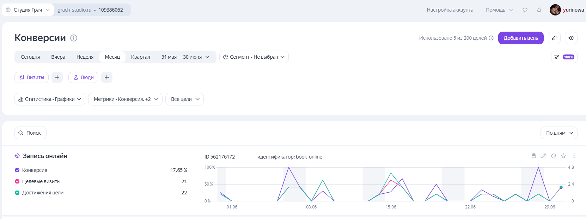
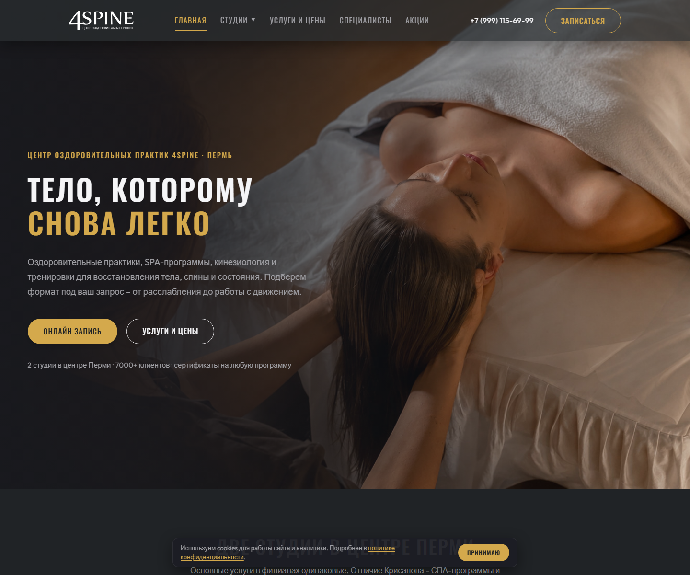
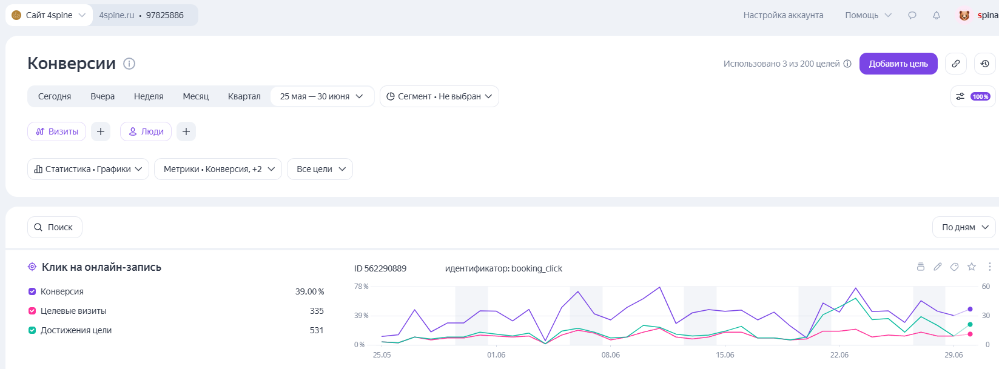

Где клиенты уходят, не записавшись
Системы записи для бьюти и велнес
Дело не в кнопке, а в системе вокруг неё.
Нахожу, где вы теряете клиентов: на входе, в напоминаниях или после первого визита. Собираю систему, в которой клиент записывается, доходит и возвращается. Проверяю её на велнес-центрах, которыми управляю: доходимость записей – 96%.
Где клиенты уходят, не записавшись
Как проходит путь
от интереса до визита
На чём сфокусироваться
в первую очередь
Можно менять шрифты и заказывать редизайн, но записей от этого не прибавится.
Деньги чаще теряются там, где их не видно: клиент записался и не дошёл, пришёл один раз и про него забыли, написал в мессенджер и не дождался ответа, ушёл к тем, кто вовремя напомнил.
Между «нашёл вас» и «записался снова» есть десяток слабых мест. Их я и собираю в одну систему.
Прежде чем что-то исправлять, надо понять, где именно. Я собрала диагностику из 12 точек, где салоны и велнес-центры чаще всего теряют клиентов: от первой записи до повторного визита.
Пройдите по ним и посчитайте свой балл: где у вас всё в порядке, а где деньги уходят прямо сейчас. Это бесплатно и займёт пару минут.
Пройти диагностику записиСистему записи как единый процесс, а не набор разрозненных сервисов. Что из этого нужно именно вам – зависит от бизнеса, разбираемся на разборе.
Сайт, страница или связка под соцсети и карты, где клиент за секунды понимает услугу, цену и как записаться. Не «каталог всего», а маршрут под запрос.
Каскад по каналам (Telegram, MAX), устойчивый к блокировкам, с подтверждением визита в один тап: статус сразу встаёт в CRM.
Цепочки после визита, реактивация спящих, дни рождения. Не когда администратор вспомнит, а системно.
Telegram, VK, WhatsApp, Direct не теряются между приложениями и в нерабочее время.
Видно, какие каналы реально приводят клиентов, и решения принимаются по цифрам, а не на ощущениях.
Кто я
Я управляющая: веду два велнес-центра в Перми и вижу запись изнутри, по своим цифрам, а не по чужим кейсам. Больше 12 лет в клиентском сервисе, последние 5 лет в глубокой операционке и аналитике, последние 3 года в бьюти и велнес.
В аналитику копаю так глубоко, что готовые интеграции её просто не тянут: часть инструментов из-за этого собрала сама. Когда чужой сервис уведомлений за ~10 000 ₽ в месяц лёг на блокировке и клиенты перестали получать напоминания, я за неделю собрала свой на своей инфраструктуре. Дешевле, устойчивее к блокировкам, и доступы с базой остались у центра.
Поэтому я не пересказываю чужие статьи, а показываю то, что проверила на своей записи и своих деньгах.
Мария Золотухина
Показываю не картинки, а задачи: где клиент терялся, что изменилось и как теперь устроен путь до записи и обратно.

Студия Марии Грач, Пермь · сайт с нуля
Студии нужен был сайт, который не просто красиво показывает мастеров, а ведёт человека к записи. Собрала его с нуля: первый экран с доверием, понятные методы, квиз-подбор, прайс, блог. Сайт молодой, но уже заработал, и аналитика это показывает.
Хороший сайт для студии не продаёт «красоту». Он снижает тревогу перед процедурой и помогает выбрать первый шаг.
Что сделала. Собрала сайт-воронку с нуля: первый экран с доверием, понятные методы (лазер, электроэпиляция, воск), квиз-подбор метода на 3 вопроса, прайс, блог со статьями, карточки мастеров, запись через Dikidi. Настроила Яндекс.Метрику с целями на ключевые действия: клик «Записаться», старт и финиш квиза, форма консультации.

Поиск приносит треть трафика и самых вовлечённых посетителей: на сайте 6+ минут, отказы вдвое ниже, чем у прямых заходов. Это работа структуры и блога. Вторая точка входа после главной: статья «Депиляция перед отпуском».
И главное для бизнеса. Рейтинг студии 5.0 на Dikidi, больше 500 оценок. Сильный сервис теперь подкреплён сайтом, который находят и который ведёт к записи.

4SPINE, Пермь · сайт + сквозная аналитика
Центр с двумя филиалами работал «вслепую»: сайт есть, аналитика подключена, а решения принимались на ощущениях. Пересобрала сайт как систему навигации и выстроила сквозную аналитику с нуля. Теперь виден каждый шаг клиента до записи, и цифры оказались сильнее, чем все думали.
Метрика была, но показывала пустоту: целей по делу нет, каналы не размечены, отчёты не открывают. Сначала нужно было сделать так, чтобы полезные данные вообще появились. А потом они сразу показали, что сайт работает лучше, чем все думали.
Было. Аналитика подключена, но бестолково: работали только автоцели, осмысленных целей нет, источники трафика не размечены, в отчёты никто не заходил. А сам сайт вырос из старой структуры: 2 филиала, 13 специалистов, 20+ страниц, и человек терялся.
Что сделала. Пересобрала сайт как систему навигации: филиалы и направления, услуги с ценами, специалисты, FAQ, путь к записи через YClients. И выстроила сквозную аналитику с нуля: цели на ключевые действия («Записаться», прайс, студии, контакты) и UTM-разметку всех каналов. Разобралась с интеграцией YClients и нашла, где реально живёт аналитика онлайн-записи.

И главное для бизнеса. Доходимость записей по обеим студиям: 96% (записался → пришёл, данные YClients). Сильный сервис теперь подкреплён измеримостью: видно, какие каналы усиливать, а решения принимаются по цифрам, а не на ощущениях.
4SPINE, Пермь · сервис напоминаний и возвратов
Чужой сервис уведомлений за ~10 000 ₽ в месяц лёг на блокировке: клиенты перестали получать напоминания о визитах. За неделю собрала свой, на своей инфраструктуре. Напоминания снова доходят, а база и доступы остались у центра.
Напоминание, которое не дошло, стоит столько же, сколько пустое кресло. Поэтому канал доставки должен принадлежать бизнесу, а не подписке.
Что сделала. Собрала сервис напоминаний и возвратов на своей инфраструктуре: каскад Telegram + MAX, утренние и финальные напоминания с длительностью услуги, подтверждение «Приду» в один тап со статусом сразу в CRM. Дальше сервис вырос: личный кабинет клиента с онлайн-записью, переносом и бонусами, цепочки возвратов, поздравления с днём рождения, заявки из мессенджеров в одном окне у администраторов.
И главное для бизнеса. Канал уведомлений больше не зависит от чужого сервиса и его тарифов: дешевле подписки, устойчивее к блокировкам, база клиентов и доступы у центра. Доходимость записей держится на 96% (данные YClients).
Можно начать с самостоятельной проверки, а дальше выбрать нужную глубину.
Оцените 12 точек, посчитайте балл и примерный порядок потерь.
Пройти диагностику →Три уровня решений: своими силами, простой связкой или отдельной системой.
Получить гайд →До созвона изучаю цифры. На встрече показываю приоритеты и варианты под бюджет.
Прийти на разбор →Сайт, напоминания, возвраты или аналитика – только то, что нужно после разбора.
Я операционщик и аналитик, а не маркетолог. Не обещаю иксы к выручке и конкретное число заявок: это зависит от ваших услуг, цен и спроса. Отвечаю за другое: чтобы запись, напоминания и возвраты работали без потерь, а вы видели по цифрам, что происходит. Слабые места покажу честно. Решение подберу под вашу задачу и бюджет, а не впарю самое дорогое.
Короткие разборы про сайт студии, соцсети, онлайн-запись и места, где клиент чаще всего теряется до заявки.
Разбор стоит 5 000 ₽. До созвона я изучаю вашу точку входа, запись и цифры. На встрече показываю, что мешает клиентам дойти до визита и с чего начать. Если продолжаем работу, 5 000 ₽ засчитываются в проект. Можно написать в Telegram или оставить короткую заявку.
Отвечу сама в течение 24 часов. Если пока рано идти на разбор, начните с бесплатной диагностики записи.